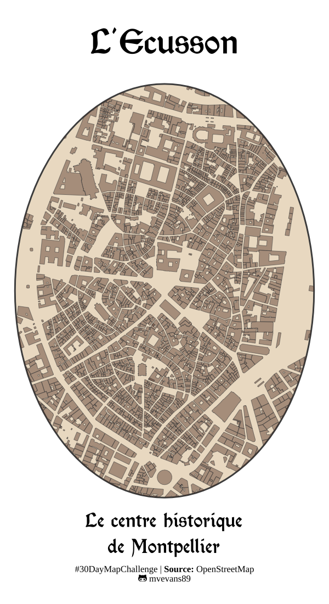

library(ggplot2)
library(ggtext)
library(showtext)
library(sf)
library(osmdata)
#add font awesome
font_add('fa-brands', here::here('fonts/fa-brands-400.ttf'))
font_add('morris-roman', here::here('fonts/MorrisRoman-Black.ttf'))
showtext_auto()
library(dplyr)Creating a streetmap of Montpellier
Day 8 of the #30DayMapChallenge - OpenStreetMap

For today’s challenge, I wanted to map the historical center of Montpellier, Écusson, using available OpenStreetMap data. Montpellier has one of the largest pedestrian zones in Europe, and it is located in the historical center of the city.
Although there is a way to download data in a scripted way via the osmdata package, I was finding it to be a bit slow. In my impatience, I just downloaded the data manually via overpass turbo. I downloaded the pedestrian ways and the buildings.
#manually downloaded from overpass API
mtp.path <- st_read("mtp-pedestrian.gpkg") %>%
select(surface, old_name, historic)
sf_use_s2(FALSE)
mtp.building <- st_read("mtp-buildings.gpkg") %>%
select(roof_material, source_heritage,building_levels, historic,height)I decided I wanted to plot this map in the shape of egg because 1) I was too lazy to change the CRS out of WGS84 and using a standard buffer on this will be elongated because Montpellier is at a 43 deg. latitude and 2) because La place de la Comédie in the historical center used to be called l’œuf, or “the egg”, because of the shape of the paving stones. I created a buffer and used this to mask the path and building data using st_intersection. I decided it needed a medieval-style font and settled on Morris Roman Black
mtp.cent <- c(3.876616, 43.610607)
mtp.buffer <- st_point(mtp.cent) %>%
st_sfc(crs = 4326) %>%
st_buffer(dist = 0.005)
#crop with the nice circle
path.crop <- st_intersection(mtp.path, mtp.buffer)
build.crop <- st_intersection(mtp.building, mtp.buffer)#define caption for easier reading
caption.lab <- paste0("#30DayMapChallenge | ",
"<b>Source: </b>OpenStreetMap<br>",
"<span style='font-family:fa-brands;'></span> mvevans89")png("centre-map.png", res = 200, width = 600, height = 1100)
ggplot() +
geom_sf(data = mtp.buffer, fill = "#E0C9A6", color = "gray30", alpha = 0.6) +
geom_sf(data = build.crop, fill = "#532915", color = "gray30", size = 0.1, alpha = 0.4) +
# geom_sf(data = path.crop, color = "#532915", size = 0.6, alpha = 1) +
theme_void() +
coord_sf(clip = "off") +
labs(title= "L'Ecusson",
caption = caption.lab) +
geom_richtext(aes(x = 3.8766, y = 43.6047, label = "<span style=;font-family:morris-roman;'>Le centre historique<br>de Montpellier</span>"), fill = NA, label.color = NA,
color = "black", size = 5, hjust = 0.5, vjust = 0.5) +
theme(plot.title = element_text(family = "morris-roman", hjust = 0.5, size = 25),
plot.caption = element_markdown(family = "serif", hjust = 0.5, size = 6))
dev.off()